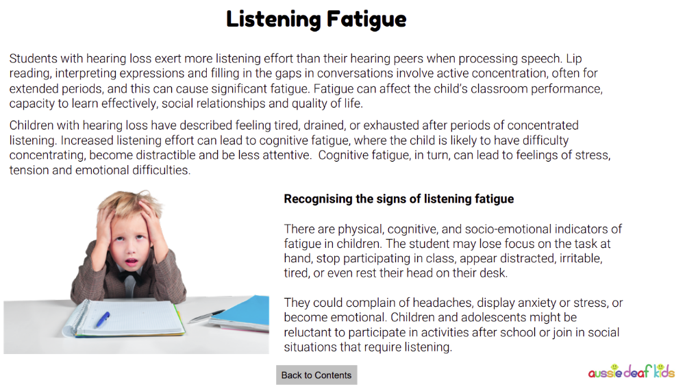

Challenges to Engagements
Understanding Challenges to Engagement
Students who are deaf or hard of hearing bring diverse strengths, experiences and ways of communicating to the classroom. However, many aspects of a typical school environment are designed around spoken communication, making everyday learning more demanding than it may appear. Difficulties are often not caused by a student's hearing loss itself, but by barriers such as background noise, distance from the speaker, rapid discussions and limited access to visual information.
This section introduces some of the common challenges that can affect attention, participation and learning. As you work through the resources, consider how classroom design and teaching practices can reduce these barriers and create more equitable opportunities for every student.
Opening video: Experiencing hearing loss in the classroom
Watch this short video to gain insight into some of the everyday experiences of students who are deaf or hard of hearing. As you watch, think about the impact that missed words, background noise and communication barriers may have on learning, social interaction and wellbeing.
Listening Fatigue
One of the least visible challenges experienced by students who are deaf or hard of hearing is listening fatigue. Listening through hearing aids or cochlear implants requires substantially more mental effort because the brain is continually interpreting incomplete or less distinct auditory information. As a result, students may experience tiredness, reduced concentration, slower processing and increased cognitive load across the school day.
The diagram below illustrates how the additional effort required for listening can accumulate over time, affecting both learning and classroom engagement. Recognising listening fatigue helps teachers understand why students may need visual supports, reduced background noise, opportunities to clarify information, and regular cognitive breaks during lessons.

Reflection: Consider a lesson you have taught or observed. Which activities require sustained listening, and what adjustments—such as visual supports, strategic seating or planned listening breaks—could reduce listening fatigue for students who are deaf or hard of hearing?